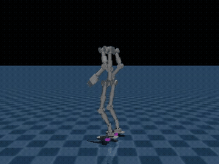
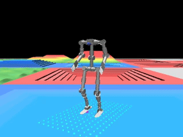
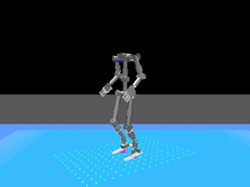
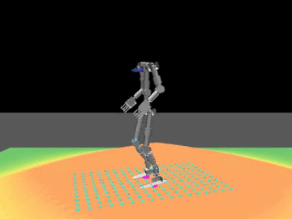
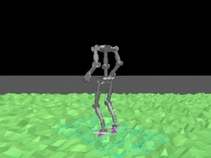
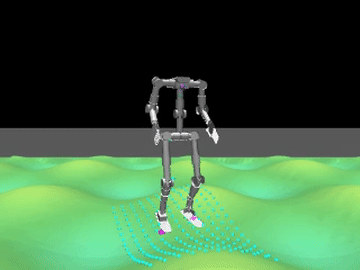

walka_rl_mjlab trains bipedal locomotion policies for the Unitree WalkaOne humanoid robot
using PPO reinforcement learning in MuJoCo simulation. Built on
mjlab's manager-based task framework and
RSL-RL, the system learns stable forward walking,
lateral strafing, and turning on both flat ground (Walka-Flat) and procedurally
generated rough terrain (Walka-Rough).
Two complete policies have been trained end-to-end on rented vast.ai RTX 4090 GPUs: Walka-Flat
(10,001 iterations, 4096 parallel environments, ~1h54m) achieves a stable forward walking gait on flat
ground, while Walka-Rough (9,900 iterations, 2048 environments, ~4h33m) navigates a
seven-terrain curriculum including pyramid stairs, slopes, random rough patches, and wave terrain. The
training pipeline integrates Weights & Biases tracking, rented-GPU workflows documented in
docs/vast_ai_training.md, and Hugging Face Hub publishing for checkpoint archival.
The task follows a velocity-tracking formulation: a randomly-sampled forward/lateral velocity and yaw
rate command is issued each episode, and the policy is rewarded for matching it while staying upright,
avoiding self-collisions, and maintaining a natural gait rhythm. Sixteen reward terms shape the learned
behavior — every term is documented with its weight, mathematical formulation, and its effect on the
final gait in docs/reward_design.md.

Trained on a flat ground for 10,001 iterations with 4096 parallel environments (~1h54m on a rented RTX 4090). The policy learns a stable, rhythmic gait that tracks commanded forward velocity while maintaining balance and avoiding foot slip.

Trained on a procedurally generated terrain curriculum mixing seven sub-terrain types (stairs, slopes, random rough, wave, etc.) for 9,900 iterations with 2048 environments (~4h33m). The policy adapts its gait to varying ground conditions, lifting feet higher over obstacles and adjusting stride length.
The training loop runs entirely in MuJoCo via mjlab, following a manager-based architecture where observations, actions, rewards, and terminations are composed from independent, typed terms. Each training iteration collects 24 steps of rollout per parallel environment, computes GAE advantages, and updates a 3-layer (128, 128, 64) ELU actor-critic with PPO's clipped-surrogate objective.
Every episode begins with a randomized velocity command sampled from ranges that widen over the course of
training via Curriculum/command_vel. Forward velocity lin_vel_x starts narrow
at (-1, 1) m/s and widens to (-2, 3) m/s by iteration 240,000 steps; yaw rate
ang_vel_z widens from ±0.5 to ±0.7 rad/s over the same schedule.
The robot's initial joint configuration is also randomized (default posture ± 0.1 rad per joint) so the
policy never sees identical start conditions twice.
The policy observes noisy actor-group data: joint positions and velocities (uniform noise ±0.01 rad, ±0.1 rad/s), base angular velocity (±0.2 rad/s), projected gravity, the commanded twist, a gait-phase clock, and the last action. The critic sees clean, privileged observations plus base linear velocity (not available in the real world). Actions are joint-position offsets around a default standing posture, applied as PD targets in MuJoCo at each simulation step.
Sixteen reward terms guide the learned behavior. The two task-tracking terms
(track_linear_velocity and track_angular_velocity, combined weight 4.0)
reward matching the commanded twist. All other terms are shaping: upright keeps the pelvis
level, pose regularizes joint angles toward default, foot_gait encourages
alternating stance/swing rhythm, foot_clearance and foot_swing_height shape
foot trajectories, and penalties discourage self-collision, joint limits, foot slip, and jittery actions.
Every term's weight and effect is documented in Reward Design below.
After 24 steps of rollout, generalized advantage estimates (GAE, γ=0.99, λ=0.95) are computed and the policy updates via PPO with ε=0.2 clip, 5 epochs over 4 minibatches, and adaptive learning rate (starts at 1e-3, adjusts to keep KL divergence near 0.01). The actor and critic share hidden layers (128, 128, 64) with ELU activations; observations are normalized via running statistics updated during training.
Both Walka-Flat and Walka-Rough were trained on rented vast.ai
RTX 4090 instances. The workflow — instance selection, environment setup, W&B tracking,
checkpoint promotion criteria, and Hugging Face Hub publishing — is documented in
docs/vast_ai_training.md. Training produces rolling checkpoints logged to W&B
(saved every 1000-1500 iterations to stay within artifact-storage quotas), and promoted checkpoints
are archived permanently to Hugging Face Hub via scripts/push_to_hub.py.
The Walka-Rough task trains on ROUGH_TERRAINS_CFG, a curriculum grid
mixing seven procedurally generated sub-terrain types. Each type presents different locomotion challenges:
discrete height steps, continuous slopes, random bumps, or sinusoidal waves. The trained policy learns
to adapt its gait to all of them — lifting feet higher on stairs, adjusting stride on slopes, and
maintaining balance over uneven ground.
Below are isolated terrain demos: the same Walka-Rough checkpoint played back on
individual terrain types with a forced forward command (--forward-speed 0.7), demonstrating
the policy's adaptive behavior.
|
 pyramid_stairs — discrete height steps |
 hf_pyramid_slope — continuous incline/decline |
|
 random_rough — random height bumps |
 wave_terrain — sinusoidal rolling waves |
The curriculum's difficulty progression — flat platforms at the start, gradually denser/taller obstacles — allows the policy to bootstrap from simpler terrain before facing the hardest challenges. This shaping is critical: training on a uniform distribution of all terrain types from iteration zero often fails to converge to any stable gait.
Sixteen reward terms shape the learned gait. Every term is computed at every simulation step and summed as
Σ weighti × termi(env). The table below lists each term's weight,
kind (bonus or penalty), and one-line purpose; full mathematical formulations and detailed commentary are
in docs/reward_design.md.
| Term | Weight | Kind | Purpose |
|---|---|---|---|
track_linear_velocity |
2.0 | bonus | Match commanded forward/lateral velocity |
track_angular_velocity |
2.0 | bonus | Match commanded yaw rate |
upright |
1.0 | bonus | Keep pelvis level |
pose |
1.0 | bonus | Stay near default joint angles, tolerance scales with speed |
foot_gait |
0.5 | bonus | Match a fixed alternating stance/swing clock |
dof_pos_limits |
-1.0 | penalty | Stay inside soft joint limits |
self_collisions |
-1.0 | penalty | Avoid self-contact above 10N |
stand_still |
-1.0 | penalty | Hold default pose when no command is active |
foot_clearance |
-2.0 | penalty | Lift feet to target height during swing |
foot_swing_height |
-0.25 | penalty | Hit target peak swing height at landing |
action_rate_l2 |
-0.1 | penalty | Smooth actions (discourage jitter) |
foot_slip |
-0.1 | penalty | No foot sliding while in contact |
soft_landing |
-1e-5 | penalty | Soft footfalls (tiny weight, mostly observational) |
Three additional terms (body_ang_vel, angular_momentum, air_time)
are wired into the reward manager but assigned zero weight — they remain inactive, available for future
ablation studies or gait variations (e.g., running vs. walking). The current weights produce the stable
walking gait seen in the training demos above; different weight combinations can bias the policy toward
other behaviors (faster forward speed at the cost of stability, more aggressive turning, etc.).
Clone the repository:
git clone https://github.com/thanhndv212/walka_rl_mjlab.git
cd walka_rl_mjlabInstall dependencies with uv. For CPU-only (dev machines without a GPU):
make sync-cpu # or: uv sync --extra cpu --group devFor GPU training (CUDA 12.8):
make sync # or: uv sync --extra cu128 --group dev# List all registered tasks.
uv run python scripts/list_envs.py
# Train a policy (swap Walka-Flat for Walka-Rough to train on terrain).
uv run python scripts/train.py Walka-Flat --env.scene.num-envs=4096
# Play back a trained checkpoint in the viewer.
uv run python scripts/play.py Walka-Flat \
--checkpoint-file logs/rsl_rl/walka_velocity/DATE/model_N.pt
# Steer it yourself (native viewer only): W/S fwd-back, J/L strafe, Q/E turn, X stop.
uv run python scripts/play.py Walka-Rough \
--checkpoint-file logs/.../model_N.pt --keyboard-steer
# Record a demo clip on one terrain type, walking forward off the spawn platform.
uv run python scripts/play.py Walka-Rough \
--checkpoint-file logs/.../model_N.pt \
--terrain random_rough --forward-speed 0.7 --video --no-terminations
# Publish a promoted checkpoint to the Hugging Face Hub.
uv run python scripts/push_to_hub.py \
--repo-id <user>/walka-velocity-flat \
--wandb-run-path <entity>/<project>/<run_id>No local GPU needed for playback or visualization — see vast_ai_training.md for the full rented-GPU workflow (instance selection, monitoring, promotion bar, Hugging Face Hub publish).
phase observation and
feet_gait/stand_still rewards are ported from its local velocity-task fork.
src/assets/robots/walka/.